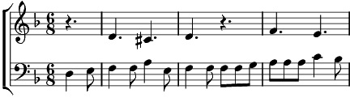

1. Feuille brune, feuille sèche
Rayon de lune le vent te berce
Ronde foll' Tourbillonn'
Et tombe enfin là, dans ma main
Refrain:
Printemps, hiver, été, automne
Main dans la main, leurs pas frissonnent
Automne, été, hiver, printemps
Main dans la main, poignée de temps
2. Papillon feu, ta vie s'achève
Ronde foll' Tourbillonn' Et tombe enfin là dans ma main
Refrain
3. Fleur joli' Fleur de soleil Fleur joli' Tu ris du ciel
Tourbillonn' en rond' foll
Grandira bien pour demain Va pour demain
Refrain
4. [T] Herbe fleur Herbe
Brin de lueur Tu te dépêches
Ronde foll' Tourbillonn'
Grandira bien demain
4. [B] Herbe fleur Herbe fraîche
Ronde foll Toubillonn' demain
Refrain